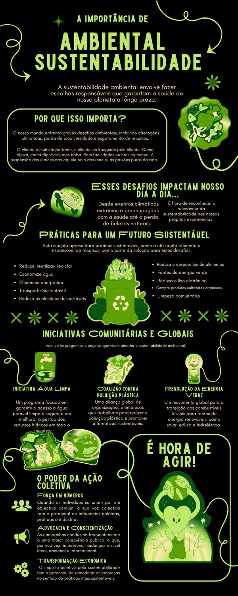

Reaproveitamento de Água e Sustentabilidade
O reaproveitamento da água é uma prática sustentável que ajuda a economizar água potável e reduzir o desperdício. Isso significa usar a água mais de uma vez antes de descartá-la, diminuindo o impacto ambiental e os custos na conta de água.
Principais formas de reaproveitamento de água
- ✅ Captação de água da chuva – Coletar e armazenar a água da chuva para regar plantas, lavar pisos e dar descarga.
- ✅ Reuso de água cinza – Aproveitar a água da máquina de lavar, do chuveiro e da pia para usos não potáveis, como limpeza.
- ✅ Irrigação sustentável – Usar sistemas de gotejamento e reaproveitamento para evitar desperdício na jardinagem.
Benefícios do reaproveitamento da água
🌍 Redução do consumo de água potável.
💰 Economia na conta de água.
🌱 Preservação dos recursos hídricos.
🏡 Menos sobrecarga nos sistemas de esgoto e drenagem urbana.
Com atitudes simples, como reutilizar a água da máquina de lavar para limpar o quintal ou captar a água da chuva para regar plantas, qualquer pessoa pode contribuir para um futuro mais sustentável! 🌿💦♻️
